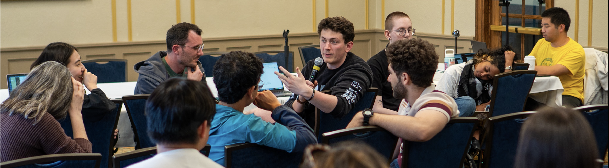

Major Stevens
Resarcher | Community Member
About Me

I’m Major Stevens, a recent Masters graduate from the University of Michigan’s School of Environment and Sustainability (SEAS) and Ford School of Public Policy (Ford). I have a range of interests, mainly focused on the political economy of inequality, corporate power, the relatively internal politics of science, and the social movements that organize to slow or halt them. Outside of my main interests, I have experience in industrial policy (shipbuilding,satellite infrastructure), labor law/policy (union and employment law), and energy policy.
The world economy is in a never ending cycle of booms and busts driven by the actions of both major corporations and government actors. Observing these cycles has inclined me to lean into critical theories of finance, legal, environmental justice, management, and infrastructure. In addition, as a born and bred rural Midwesterner, I hope to apply these ideas in the context of rural America, focusing particularly on the rural Midwest.
I am a Democratic Socialist at heart and have spent much of my time organizing my local communities. I was the SEAS and Ford steward of the Graduate Employees Organization as well as its Treasurer. There I managed, analyzed, and projected the union’s income and expenses with a process emphasizing open and democratic knowledge and decision making. At the same time, I conducted an extensive review and alteration of GEO’s $500,000 portfolio investment policy, utilizing a mixture of AFSC’s investment guides, environmental guidelines, and numerous interviews of progressive investment firms. Fundamentally, my actions as Treasurer reflect my belief of open and democratic knowledge sharing and decision making at which seeks to redress harms and promote radical hope and justice. Additionally, I was also the treasurer of the Ann Arbor Tenant’s Union as well as the Tahrir Coalition. Fundamentally, the simple act of voting cannot change the world, it is only through building community and constantly organizing under an agenda that values every being can we seek justice from the structures that under gird our own oppression.
Before being a recent Masters Graduate at the University of Michigan, I was an undergraduate student at the University of Michigan with majors in Astrophysics, Political Science and minors in Quantitative Methods in Social Sciences and Energy and Technology Policy. I explored the relationship between scientific decisions and political decisions through my senior thesis advised by Joel Bregman in the Astronomy Department. While there, I additionally served as an elected member of the Central Student Government from 2020-2023 as well as several volunteer positions to instill scientific and political curiosity among both Middle and High Schoolers.
Key Research Interests
- Political Economy of Inequality: How rural communities particularly face growing inequality outside of their own tax-base jurisdiction but within other government service jurisdictions
- Space Policy: Remote Sensing Political Economy, Launch Political Economy,
- Corporatization of Housing: How growing economic consolidation impacted both the quality and costs of housing.
- Political Economy of Infrastructure: Rural communities alteration of economies and community due to large scale infrastructure changes.
Teaching
Along with research, teaching has been one of my major passions. In my graduate program, I taught several introductory Astronomy courses geared towards students who wanted a wide breadth of astronomical knowledge. I even designed my own course focused on observing the night sky and the elements that make it up. This course design also allowed me to give students opportunities to explore the poliical aspects of space such as observations, satellite launches, and the decision making processes behind scientific agreement amongst Astronomers.
Courses Include
- Astro 115: Astrobiology
- Astro 102: Introduction to the Stars and Galaxies
- Astro 105: The Cosmos through the Constellations
- Astro 101: The Solar System and the Night Sky
- Astro 127: Naked Eye Astronomy
Personal Life
I was born and raised in Southwest Michigan, in town called Paw Paw Michigan. I have lived in Ann Arbor since I started undergrad in late 2018. It was there I also met my partner Aarushi Ganguly, a rising 1st year PhD student at Cambridge University.
In my free time, I enjoy learning and exploring new cultures, skills, and most importantly arts.